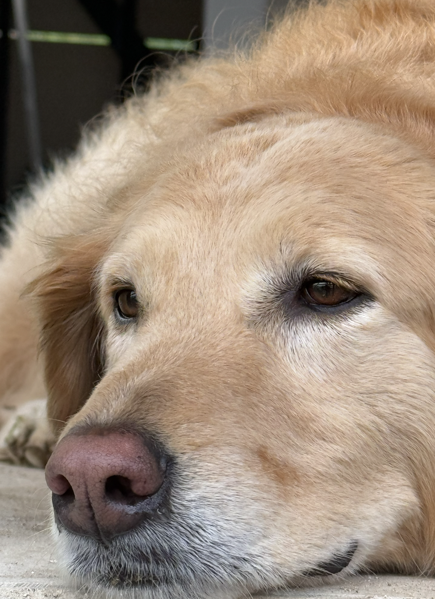
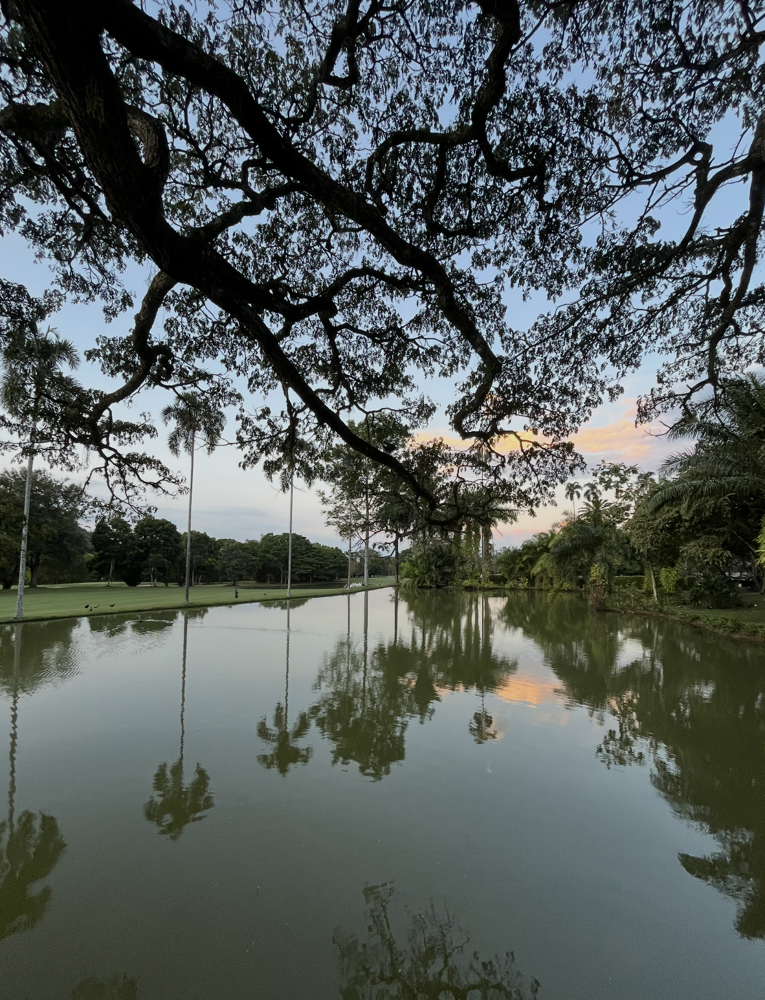

Design · Content · ExperienceScroll to explore ↓
01 / THE THROUGH-LINEWords meet journeys
A little context
before the timeline.
Maria Gabriela Bonilla Amador
02 / A few chapters
The work, in motion.
Open a role for the details.
Close it when you’re ready for the next.
03 / Learning, along the way
Study & exchange.
04 / The things I bring
Useful by design.
People, communication and delivery
all belong in the same conversation.
Languages
For the inbox, the interview, the next step
Prefer the classic version?
A little more of my professional world
The LinkedIn
version of me.
A little life beyond the laptop
The Off-Duty
version of me.
Off the clock, I’m usually with Candelaria, somewhere new, or taking the scenic route.

